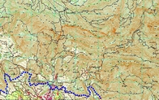
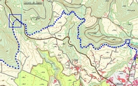

| 2. El puente del barranco del Convento El tramo inicial de este acueducto discurre bordeando la colina sobre la que se yergue el pueblo de Tuéjar, para a continuación dirigirse en dirección Norte hacia el Collado de Espés. El barranco del Convento es salvado por medio de un puente acueducto de un solo arco, a cota 527, 34 m, al borde mismo de la carretera C-234, exactamente en el Km. 70,8. Este puente presenta signos evidentes de diversas reparaciones, lo que no impide apreciar como su técnica constructiva es similar a la de otros puentes localizados más adelante como la rambla de Alcotas o el que salva el barranco de la Cueva del Gato. Al otro lado de la carretera sigue el specus en dirección a la zona norte de Chelva, conservándose aquí algún otro punto en el que se observa como se ha tallado la roca viva para utilizarla como conducto de agua. Sus restos continúan por la denominada Fuente de la Gitana. Siguiendo en dirección al collado de Viñaro, su trazado llega a coincidir con el de la denominada senda de Mas de Solaz o Bumbel, siendo visibles sus restos en uno de los márgenes de la senda. |
  ---> |